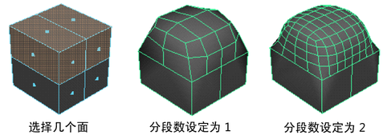
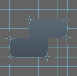
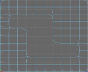

使用这些选项可设置在选择时发生的情况。
- 继承平滑网格预览(Inherit Smooth Mesh Preview)
-
如要希望将网格从“平滑网格预览”(Smooth Mesh Preview)显示模式转化为细分曲面代理，并保留当前的“平滑网格预览”(Smooth Mesh Preview)设置，请启用该设置。例如，如果要渲染平滑版本的对象或对其设定动画。
- 细分方法(Subdivision Method)
- 指数平滑控制(Exponential Smoothing Controls)
-
有关“指数平滑控制”(Exponential Smoothing Controls)的信息，请参见“平滑选项”(Smooth Options)。
- 线性平滑控制(Linear Smoothing Controls)
-
有关“线性平滑控制”(Linear Smoothing Controls)的信息，请参见“平滑选项”(Smooth Options)。
指数平滑控制(Exponential Smoothing Controls)
将“细分方法”(Subdivision Method)设置为“指数”(Exponential)时，以下选项可用。
- 分段级别(Division Levels)
-
使用滑块或在“分段级别”(Division levels)框中键入数字可增加或减少 Maya 执行平滑操作的次数。同时也会增加或减少对象的平滑度。“分段级别”(Division levels)范围为 1 到 4。值越大，对象就越平滑。
 - 细分类型(Subdivision type)
-
使您可以选择用于在“细分曲面代理”(Subdiv Proxy)模式下平滑网格的算法。根据您选择的“细分类型”(Subdivision type)的不同，会显示不同的选项。
- Maya Catmull-Clark
-
使用 Maya 的 Catmull-Clark 算法实施平滑网格的面。
有关“Maya Catmull-Clark”选项的详细信息，请参见 Maya Catmull-Clark 控件。
注： 在 Maya 2014 和更早的版本中，“Maya Catmull-Clark”是默认的细分类型。 - OpenSubdiv Catmull-Clark
- （默认）使用 Maya 的 OpenSubdiv 库实施平滑网格的面。“OpenSubdiv Catmull-Clark”对网格面应用统一的细化方案。请参见 OpenSubdiv 概述。
有关“OpenSubdiv Catmull-Clark”选项的详细信息，请参见 OpenSubdiv 控件。
OpenSubdiv Catmull-Clark
只有当选择的“细分类型”(Subdivision type)为“OpenSubdiv Catmull-Clark”时，以下选项才可用。
- 顶点边界(Vertex Boundary)
- 控制如何对边界边和角顶点进行插值。
重要： 当使用“OpenSubdiv Catmull-Clark”细分类型时，角为两个边相交的网格区域。
- 锐边和角(Sharp edges and corners)
- （默认）边和角在平滑后保持为锐边和角。
在以下示例中，边和双边角均为尖锐。
- 锐边(Sharp edges)
- 边在平滑后保持为锐边。角已进行平滑。
在以下示例中，边为锐边，但双边角已进行平滑。

- UV 边界(UV Boundary)
- 控制如何将平滑应用于边界 UV。
重要： 当使用“OpenSubdiv Catmull-Clark”细分类型时，角为两个边相交的网格区域。
- 无插值(No Interpolation)
- 不平滑 UV。
- 平滑(锐边和角)(Smooth (sharp edges and corners))
- 平滑 UV。边和角在平滑后保持为锐边和角。
在以下示例中，边界边和双边角均为尖锐。

- 平滑(锐边)(Smooth (sharp edges))
- 平滑 UV 和角。边在平滑后保持为锐边。
在以下示例中，边界边为锐边，但双边角已进行平滑。
 - 平滑(全部尖锐)(Smooth (all sharp))
- （默认）启用时，平滑不连续边界上的顶点附近的面变化数据（UV 和颜色集）。不连续边界上的顶点将按锐化规则细分（对其插值）。
 注： “平滑(全部尖锐)”(Smooth (all sharp))会与“Maya Catmull-Clark”控件中的“平滑内部”(Smooth Internal)选项产生相同的结果。
注： “平滑(全部尖锐)”(Smooth (all sharp))会与“Maya Catmull-Clark”控件中的“平滑内部”(Smooth Internal)选项产生相同的结果。
- 传播 UV 角(Propagate UV Corners)
- 启用后，原始网格的面变化数据（UV 和颜色集）会应用到平滑网格的 UV 角。默认设置为禁用。
- 平滑三角形(Smooth Triangles)
- 启用后（默认），会将细分规则应用到网格，从而使三角形的细分更加平滑。
- 折痕方法(Crease Method)
- 控制如何对边界边和顶点进行插值。
- 正常(Normal)
- （默认）不应用折痕锐度平滑。
- Chaikin
- 启用后，对关联边的锐度进行插值。在细分折痕边后，结果边的锐度通过 Chaikin 的曲线细分算法确定，该算法会产生半锐化折痕。此方法可以改进各个边具有不同边权重的多边折痕的外观。
Maya Catmull-Clark
只有当选择的“细分类型”(Subdivision type)为“Maya Catmull-Clark”时，以下选项才可用。
- 边界规则(Boundary rules)
- 通过该选项，可以设置在平滑网格时要将折痕应用于边界边和顶点的方式。
- 旧版(Legacy)
- 不将折痕应用于边界边和顶点。
- 折痕全部(Crease all)
- （默认设置）在转化为平滑网格之前为所有边界边以及只有两条关联边的所有顶点应用完全折痕。
- 折痕边(Crease edges)
- 仅为边应用完全折痕。
- 连续性(Continuity)
-
此处输入的值可确定平滑度。
- 平滑 UV (Smooth UVs)
-
对 UV 应用与顶点相同的平滑操作。默认情况下，“平滑 UV”(Smooth UVs)处于启用状态，这样可以为 UV 提供更好的结果。
如果要保持与在旧版 Maya 中创建的场景的兼容性，或者 UV 无需进行平滑但您希望提高性能，则禁用“平滑 UV”(Smooth UVs)。
- 传播边的软硬性(Propagate Edge Hardness)
-
将边的软硬性值从原始网格上的任何硬化边复制到平滑网格预览上关联的新边。默认设置为禁用。
- 映射边界(Map borders)
-
控制“平滑 UV”(Smooth UVs)处于启用状态时如何平滑边界。
- 平滑全部(Smooth all)
-
平滑所有 UV 边界。
- 平滑内部(Smooth internal)
-
平滑内部边界。这是默认设置。
- 不平滑(Do not smooth)
-
不平滑边界。
- 保留(Preserve)
-
指定平滑时哪些组件不受影响。
- 几何体边界(Geometry borders)
-
启用该选项（默认）时，将保留网格的边界边的属性。
- 硬边(Hard edges)
-
保留任何手动硬化或软化的现有边的属性。如果已更改边的硬度或柔和度（或），则启用此选项以保持这些设置。
设置(Setup)
- 镜像行为(Mirror Behavior)
-
控制平滑网格和代理网格镜像和/或相对于彼此放置的方式。
- 无(None)
-
将在代理网格中创建平滑网格。
- 完全(Full)
-
将在代理网格中创建平滑网格，且代理网格和平滑网格同时基于“镜像方向”(Mirror Direction)镜像。
对代理网格的一半所做的调整会自动镜像到另一半，这使得对称建模变得更容易。
- 一半(Half)
-
将紧邻代理网格创建平滑网格（基于“镜像方向”(Mirror Direction)）。这样您就可以修改代理网格并在平滑网格上清楚地看到结果。
注： 通常使用镜像对对象进行建模，而不是对其设定动画。否则，对象的动画将会是对称的。使用镜像完成对象建模后，请使用移除平滑网格。然后创建一个用于对对象设定动画的新细分曲面代理（将“镜像行为”(Mirror Behavior)设定为“无”(None)）。
注： 如果在对象空间模式下修改细分曲面代理已镜像的一半，沿一个方向拖动操纵器将修改相反方向的代理。如果在世界空间模式下修改细分曲面代理镜像的那一半，则在一个方向上拖动操纵器时将会在同方向上修改代理。
如果在对象空间或世界空间模式下修改细分曲面代理原始的那一半，沿一个方向拖动操纵器将修改同一方向的代理。
注： 镜像仅适用于世界坐标轴。镜像已被任意旋转的对象可能会产生意外的结果；某些几何体可能会重叠。
- 镜像方向(Mirror Direction)
-
选定网格的镜像方向。即，正或负 X、Y 或 Z。
“细分曲面代理”(Subdiv Proxy)将在其边界框范围内按“镜像方向”(Mirror Direction)镜像代理网格。
- 合并顶点容差(Merge Vertex Tolerance)
-
如果原始网格上的顶点与其相应镜像顶点之间的距离小于“合并顶点容差”(Merge Vertex Tolerance)，则它们将被合并为一个顶点。
- 共享变换节点(Share Transform Node)
-
控制变换代理网格时是否变换平滑网格。
例如，您可能希望移动代理网格使之远离平滑网格，从而调整代理网格并在平滑网格上清楚看到效果。在这种情况下，请禁用“共享变换节点”(Share Transform Node)。
或者，可能希望保持代理网格和平滑网格一起。在这种情况下，请启用“共享变换节点”(Share Transform Node)。
- 启用(On)
-
变换代理网格时也将变换平滑网格。
- 禁用(Off)
-
变换代理网格时将不会变换平滑网格。
提示： 使用细分曲面代理时，可以保存低分辨率网格，然后将其用于快速交互式播放，前提是尚未对节点执行会影响其历史的其他修改。在禁用了“共享变换节点”(Share Transform Node)的情况下使用。将代理网格绑定到骨架，并使用热键（1 键旁边的左侧单引号）隐藏平滑网格。低分辨率网格将提供快速的交互式播放。
若要显示平滑网格（例如，进行渲染），请再次按 ` 热键。（或禁用“可渲染的细分曲面代理”(Subdiv Proxy Renderable)选项，这样就不会渲染代理网格了。）
注：如果创建启用了“共享变换节点”(Share Transform Node)的细分曲面代理，则删除代理网格上的历史时，代理网格和平滑网格将显示为单个对象。这是因为它们共享一个变换节点。若要选择代理网格或平滑网格（例如，为了删除其中之一），请按向下箭头键，然后按向左箭头键或向右箭头键。
显示设置(Display Settings)
- 细分曲面代理着色器(Subdiv Proxy Shader)
-
控制代理网格材质的外观，使之最适合您希望的工作方式。
- 删除(Remove)
- 消除代理网格与其材质之间的连接。
- 保持(Keep)
- 保持代理网格与其材质之间的原始连接。如果选择“保持”(Keep)，则需要并行移动代理网格和平滑网格。
- 透明(Transparent)
- 将具有部分透明度的新 Lambert 材质指定给代理网格。这样，就可以查看代理下面的平滑网格。
- 细分曲面代理透明度(Subdiv Proxy Transparency)
-
设定代理网格材质的透明度属性。该材质是由细分曲面代理操作创建的。
- 可渲染的细分曲面代理(Subdiv Proxy Renderable)
-
控制启用该选项时渲染代理网格，禁用该选项时不渲染代理网格。
- 层中的细分曲面代理(Subdiv Proxy In Layer)
-
启用时，Maya 会将代理网格添加到一个新层，以便可以控制代理网格的可见性。禁用时，将不会创建层。例如，如果对象已位于另一个层中，则可能需要禁用该选项来使代理网格只属于一个层而不是两个层。
- 平滑层中的网格(Smooth Mesh In Layer)
-
在“层编辑器”(Layer Editor)中启用可向层添加平滑网格的功能。
- 平滑层显示(Smooth Layer Display)
- 为平滑网格层设定默认状态。这些选项仅在“平滑层中的网格”(Smooth Mesh in Layer)选项处于启用状态时可用
- 普通(Normal)
-
平滑网格在该显示状态下完全可见且可选。
- 模板(Template)
-
平滑网格显示为一个模板，但不可作为一个对象进行选择。
- 引用(Reference)
-
“引用”(Reference)显示状态限制您直接编辑平滑网格。这是默认设置。
注： 和这两种方法输出多边形顶点的顺序不同。如果需要执行需要相同拓扑的操作，例如，使用“融合变形”(Blend Shape)，则可能希望使用相同的平滑工具平滑多边形网格，以避免意外结果。